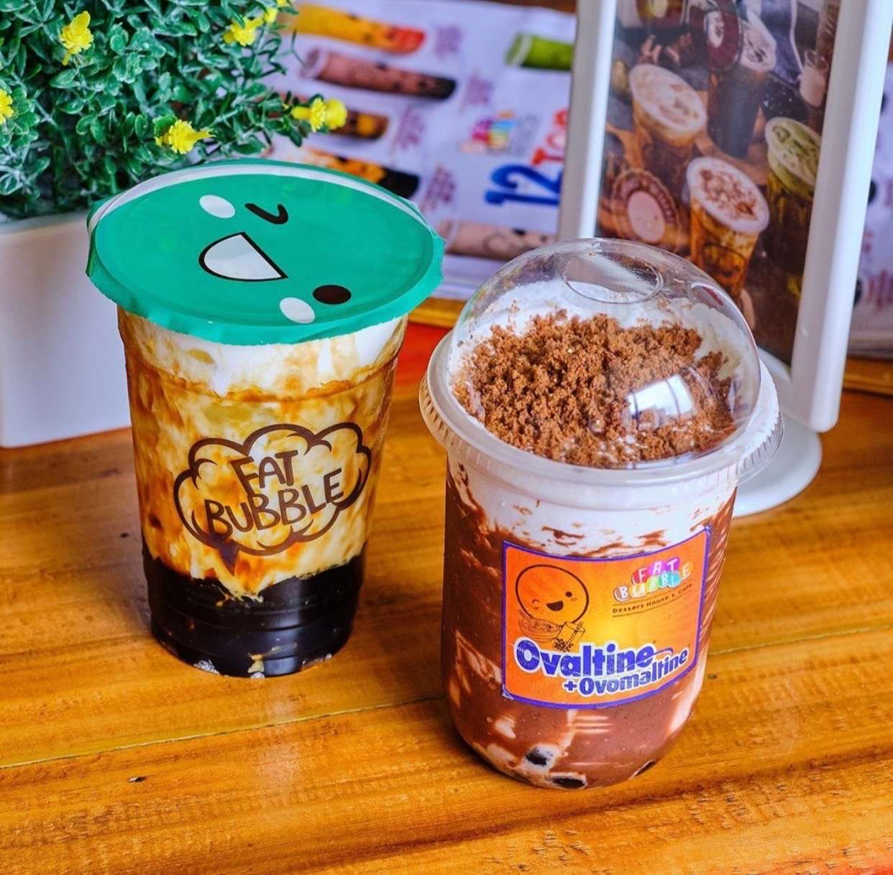
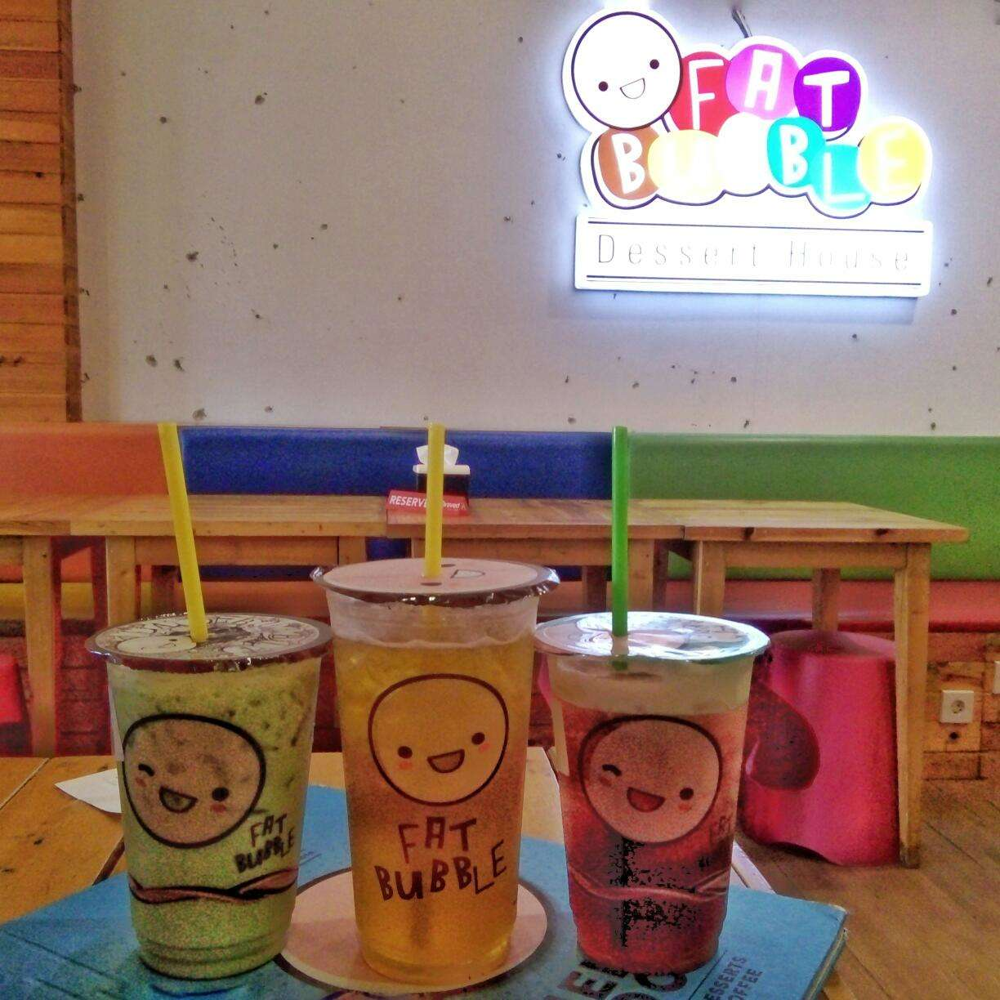
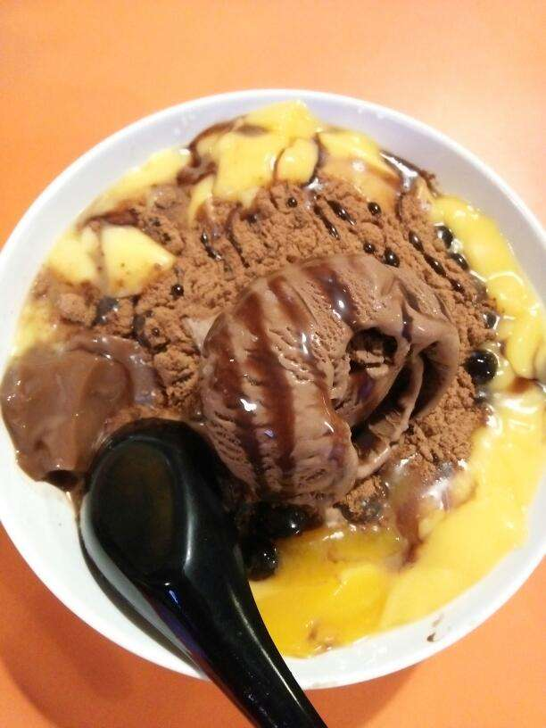
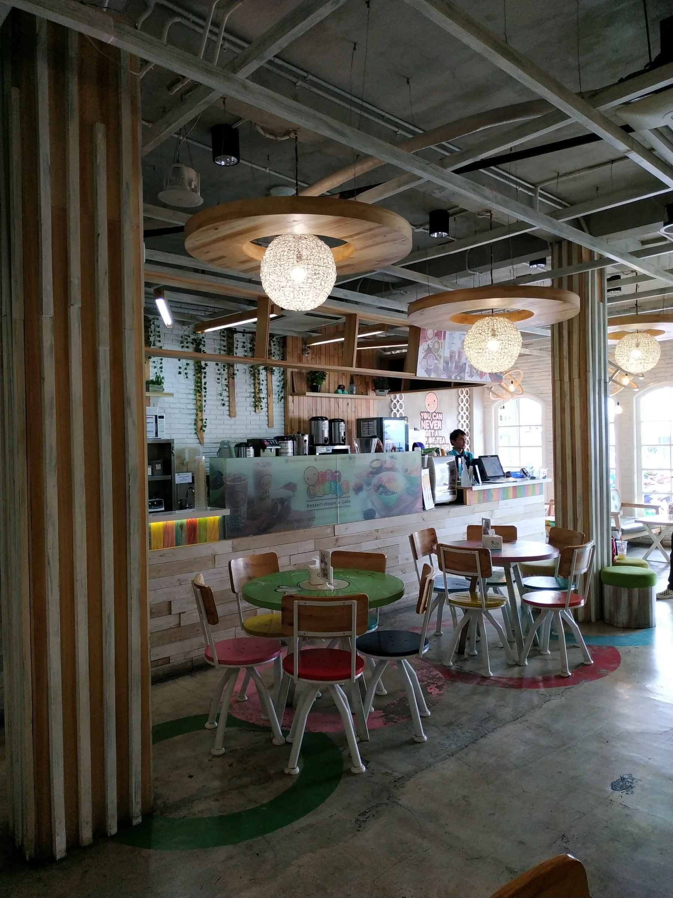
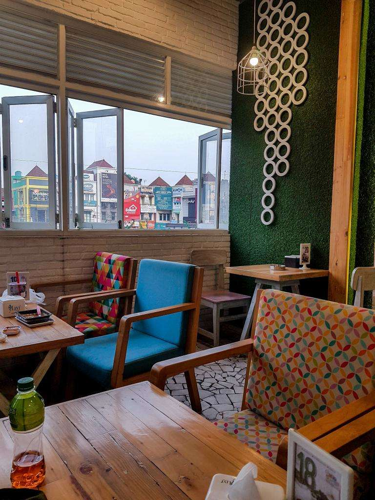

Terdapat area parkir yang bisa kamu gunakan untuk parkir di depan Fat Bubble Depok, tempat parkir ini cukup untuk mobil dan motor.
Lantai 1 dan Lantai 2 ruko Fat Bubble terdapat area makan untuk para pelanggan, area makan ini didukung dengan fasilitas AC, kebersihan terjaga, dan suasana yang enak untuk makan bersama dengan keluarga.
Lantai 1 dan Lantai 2 tersedia toilet yang bisa kamu gunakan, tersedia juga tempat kamu untuk membersihkan tangan selepas makan di Fat Bubble.
Fat Bubble Depok memiliki alamat di Jl. Margonda Raya No.238, Kemiri Muka, Beji, Kota Depok, Jawa Barat 16423